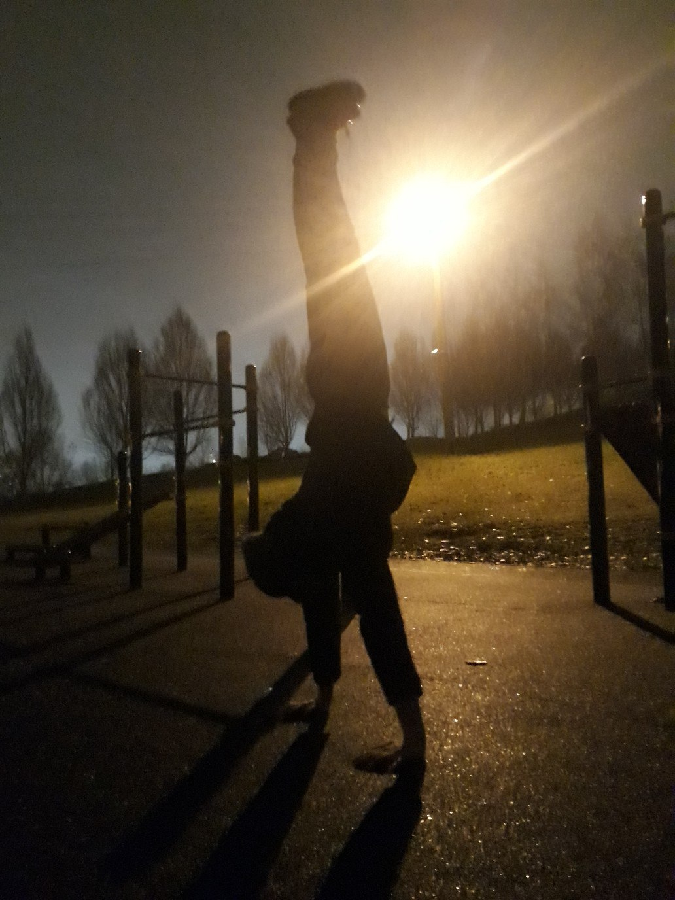
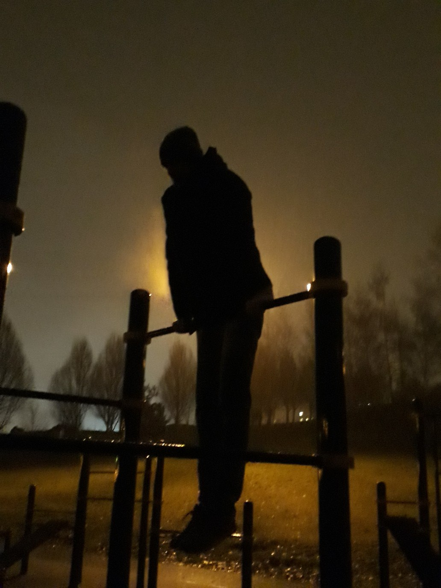
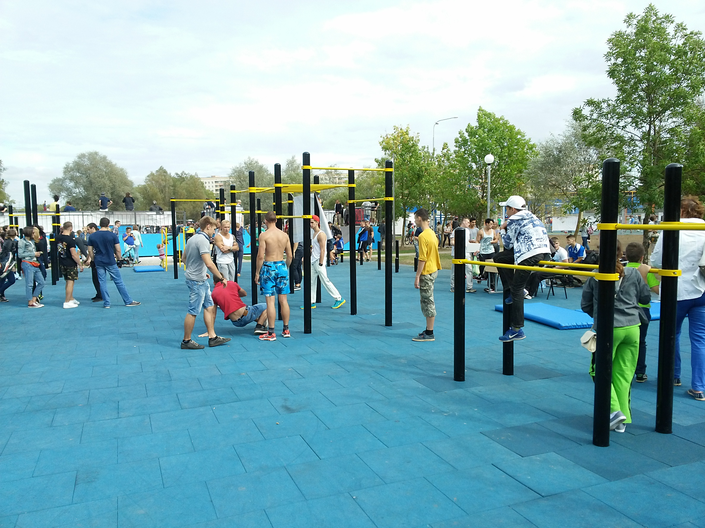

|
|
Наверное, моим главным увлечением является информатика и вообще современные технологии. Больше всего я интересуюсь сферой искусственного интеллекта (AI) и новыми направлениями в использовании машинного обучения. Также мне нравится изучать различные алгоритмы, решать задачки (в том числе математические) и, конечно же, проектировать веб-сайты на HTML:)
В 11 классе я участвовал в Республиканской конференции в секции информатики, где занял вместе с напарником 1 место. Также наш проект PlagiApp принимал участие в BelSEF 2017.
Я планирую развиваться дальше, участвовать в новых проектах, так как это то, чем я люблю заниматься.
|
|  |
 |
 |
 |
 |
|
|
Я полностью согласен с высказыванием "О спорт, ты жизнь!" С детства папа учил меня ездить на велосипеде, кататься на лыжах, подтягиваться, плавать. Сейчас я как никогда понимаю, как важен для человека здоровый образ жизни. Как говорится, в здоровом теле - здоровый дух.
Хочу рассказать о моем, наверное, любимом виде спорта - Стрит Воркауте. И хоть не все еще сегодня знают про воркаут, однако это направление стало не менее популярным, чем спортивная гимнастика. Приведу некоторые определения:
- Воркаут —
-
это уличная гимнастика, которая включает в себя выполнение различных упражнений на уличных спортплощадках, а именно на турниках, брусьях, шведских стенках, рукоходах и прочих конструкциях, или вообще без их использования (на земле). Основной акцент делается на работу с собственным весом и развитием силы и выносливости.
- Фитнес —
-
это общая физическая подготовленность организма человека.
- Культуризм —
-
процесс наращивания и развития мускулатуры, путём занятия физическими упражнениями с отягощениями и высокоэнергетического питания, с повышенным содержанием питательных веществ, в частности, белков, достаточным для гипертрофии скелетных мышц.
|